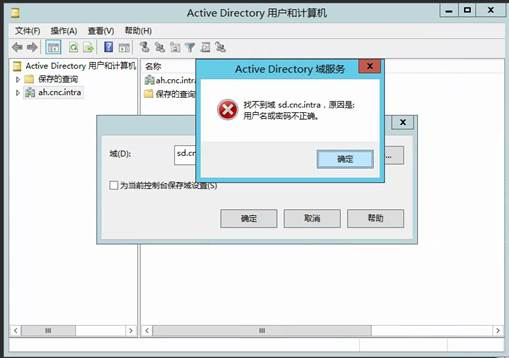
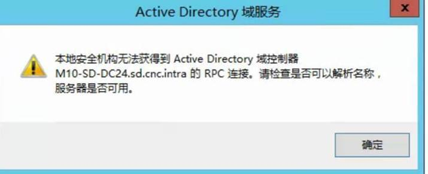

454 4.7.0 Temporary Authentication Failure
问题描述
中心站点HQ在根域cnc.intra，部署了 Exchange 2013。
分站点SD在子域sd.cnc.intra，部署了 Exchange 2010。
在联通环境中，所有分站点的进出邮件，都要通过中心站点HQ。
分站点SD的所有的入站邮件都无法到达，卡在HQ站点的Exchange 上，报错为：454 4.7.0 Temporary authentication failure
1 2 3 4 5 6 7 8 9 10 11 12 13 | |
问题原因
SD站点与HQ站点的AD Trust 损坏，导致站点间Kerberos验证失败。
解决办法
在根域cnc.intra的DC上重置它与子域sd.cnc.intra的trust:
1 | |
排查过程
检查站点SMTP Send/Receive log
HQ站点SMTP Send log中看到所有与SD站点的session之间都是显示：Outbound Authentication failed with LogonDenied
1 2 3 4 5 6 7 8 9 10 11 12 13 14 15 16 17 18 19 | |
SD站点的
SMTP Receive log中也是看到相同的报错。
HQ站点App log
HQ站点的App log中，存在大量2017 error：
1 2 3 4 5 6 | |
搜索454 4.7.0 Temporary authentication failure文档
根据报错454 4.7.0 Temporary authentication failure搜到了一篇官方KB，情况都很符合。根据Resolution检查SD站点与HQ站点间Exchange/DC时间同步，没有问题。
NETTIME命令检查DC
当在HQ站点执行NETTIME命令查SD站点DC时，发现在HQ站点竟然没法Get到SD站点的DC。ADUC中也显示找不到域，原因是用户名密码不正确。

检查 Kerberos
在HQ站点抓取网络包后发现 Kerberos 出现了Error（其中10.**.**.15 为SD站点DC，10.**.**.31为HQ站点Exchange）
217 218 | |
检查AS复制
我们检查cnc.intra和SD子域的AD复制，发现它们之间可以正常复制对方的分区。
检查父域与子域的Trust
我们在父域上检查了它与SD子域的trust ，但是出现如下报错，而从SD子域的DC上验证到父域的DC则是正常的。

运行NLTEST
我们同时尝试在父域的DC上运行NLTEST /dclist:sd.cnc.intra查询SD的DC列表也出现以下报错，由于DSGETDC function需要bind DC，而在没有Trust或Trust损坏的情况下都会出现如下报错：
1 2 3 4 | |
重置Trust
我们在SD域的DC上运行
1 | |
成功重置Trust
测试
在等待两个域的DC成功复制到变更后，Trust 验证成功并且之前出现的AD报错消失。邮件流恢复正常。
常见问题
如何验证AD Trust？
Use NLTEST to test the trust relationship between a workstation and domain and to test domain trust relationship